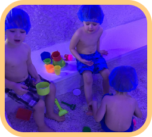
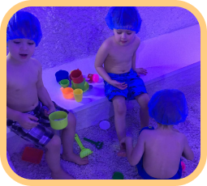

Откройте детский сад по франшизе «Продетство» и зарабатывайте 80% прибыли от постоянных клиентов
Каждый ребёнок посещает детский сад в течение 4-6 лет: заполните все места и зарабатывайте от 300 000 рублей чистой прибыли в месяц.
-
Проконсультируем,
как получить все разрешения от госорганов для открытия детского сада - Подскажем, как получить субсидии для компенсации ваших затрат на зарплату персонала
- Расскажем, как создать условия, когда родители смогут оплачивать часть тарифов детского сада за счёт субсидий
Почему родители выбирают детский сад «Продетство»
Мы создаём не просто сеть частных детских садов. Мы растим физически здоровое поколение, воспитываем всесторонне развитую личность, формируем правильные социальные ценности.
-
Разностороннее развитие детей
Все дети занимаются:
- Творческими занятиями;
- Занятиями по развитию речи;
- Музыкой;
- Основами закаливания и спортивной подготовкой;
- Интеллектуальными занятиями и подготовкой к школе. Основами закаливания и спортивной подготовкой; Интеллектуальными занятиями и подготовкой к школе.
-
Общее и индивидуальное меню
В детском саду все дети получают одинаковое питание, но при наличии особенностей со здоровьем или религией можно согласовать индивидуальное меню.
-
Психологическое и физическое здоровье детей
- В детском саду работает психолог, который совместно с воспитателем осуществляет психологическое сопровождение на всех этапах развития.
- Деский сад оснащён интерактивным оборудованием «интерактивный пол». Занятия на нём оказываю профилактический эффект от плоскостопия и сколеоза.
-
Формирования коммуникативных навыков
В детском саду реализуется модель «наставничество». Все дети занимаются парами с более младшими товарищами — это развивает у них коммуникативные навыки, а также формирует чувство ответственности и дружелюбие к товарищам.
У нас проходят спектакли для родителей, к которым дети готовят и репетируют свои роли.
-
Детский сад награждён знаком качества
Частный детский сад «Мир Детства» (в 2021 г. проведён ребрендинг в «Продетство») в 2020 г. награждён Знаком качества «ЛУЧШЕЕ-ДЕТЯМ». В 2021 году награда получена повторно.
Подробнее о бизнес-модели детского сада: состав групп, дополнительные занятия
По франшизе «ПРОДЕТСТВО» вы откроете свой детский садик по бизнес-модели, которая уже проверена и устойчива более 10 лет.
У вас будет 3 группы с разными возрастными категориями:
-
Ясельная группа
Возраст детей от 1,5 до 3 лет, количество мест — 15.
-
Младшая группа
Возраст детей от 3 до 4,5 лет, количество мест — 15.
-
Старшая группа
Возраст детей от 4,5 до 7 лет, количество мест — 20.
В детском саду — помимо занятий и мероприятий по общему образованию (ОФП, подготовка к школе и др.) — присутствуют занятия с дополнительной направленностью:


 

Также родители могут усилить обучение своего ребёнка по одному или несколькоим направлениям, приобретая по ним дополнительные занятия.
Уделяем максимум внимания качеству услуг, и это приносит свои результаты
Мы тщательно и систематически следим за качеством услуг по уходу и присмотру за детьми т.к. высокий сервис является фактором долгосрочных коммерческих отношений с клиентами.
Как происходит контроль качества:
-
В штате детского сада предусмотрен методист, который контролирует качество обучения детей. Он проверяет компетенции нанимаемых педагогов и следит за качеством проведения занятий. 2 раза в неделю методист заполняет «карту контроля» с отчётами по проведённым занятиям. Если качество уроков не соответствует стандартам «ПРОДЕТСТВО», он проводит беседы с педагогом и предпринимает необходимые меры.
-
На прогулочной площадке детского сада предусмотрено видеонаблюдение. Такое решение усиливает контроль за детьми во время прогулки.
-
Каждый день родители получают уведомление в мессенджерах с информацией о проведённых занятиях, дневном меню и с описанием других событий, в которых участвовали их дети.
Результаты говорят сами за себя:
-
Заполняемость мест
в детском саду
«ПРОДЕТСТВО» -
Новых воспитанников
приходят в детский сад по рекомендациям, которыми родители делятся между собой.
Средний чек 19 550 рублей в месяц —
показываем прибыль, которая из этого получается
-
Средняя выручка:
от 1 000 000
до 1 100 000
рублей в месяц -
Средняя прибыль:
от 300 000
до 340 000
рублей в месяц -
Окупаемость:
17 месяцев -
Средняя выручка:
29,4%
Калькулятор потенциального дохода
Ясельная группа
Старшая группа
Младшая группа
Участие в доп. занятиях
всего:
499 999 рублей в месяц
Каждый 20-й человек ищет детский сад для своего ребёнка —
в городе с населением от 200 000 человек у вас будет от 10 000 потенциальных клиентов Для плановой прибыли от 300 000 до 340 000 рублей в месяц вам достаточно набрать 3 группы из 50-ти детей.
4 факта о рынке услуг детских садов:
-
Все родители прилагают максимум усилий, чтобы их дети выросли образованными и социально адаптированными, чему способствует их пребывание в детских садах среди сверстников.
-
Только в Яндексе каждый месяц от 7 000 000 до 9 000 000 семей по всей России ищут детский садик.
-
Часты случаи, когда в государственных детских садах не всем хватает места и семьи вынуждены вставать в очередь. Например, в сервисе Mail group есть обсуждения, где люди жалуются на 400-е, 100-е и др. места в очереди. О подобных ситуациях Вы могли слышать и вживую.
-
Только 2020 году по данным переписи населения количество родившихся детей составило 1 435 800 человек и каждому из них понадобится место в детском саду.
Вы заручитесь нашей поддержкой и откроете свой детский сад в 3 этапа
На этапе открытия вы получите от нас все регламенты, консультации и личную помощь.
1 ЭТАП
Знакомство с нами
и бизнесом в социальной сфере
Подготовим Вас к открытию детского сада
После заключения договора вы получите все регламенты по созданию детского сада и пройдёте обучение ведению бизнеса в социальной нише
Вступите в сообщество предпринимателей
Подключим к сообществу предпренимателей из социальной сферы во главе Марии Сафроновой
2 ЭТАП
Подготовка к открытию детского сада
Найдёте локацию и площадь
С нашей помощью вы найдёте подходящую локацию и помещение для открытия сада. Подскажем каким нюансам нужно уделить внимание на этапе ремонта.
Обустроете детский сад
Получите перечни оборудования и расходных материалов, которые необходимы для обустройства детскогосада. Поделимся контактами поставщиков.
Соберете команду детского сада
Передадим штатное расписание, систему мотивации персонала и др. Поможем с наймом персонала
Получите методические материалы
Передадим все методические материалы «Продетство» и обучим вашу команду стандратам работы с детьми
3 ЭТАП
Получение лицензии
и запуск бизнеса
Получите лицензию
Поможем подготовить все документы, чтобы вы получили лицензию детского сада. Так вы сможете получать гранты и субсидии от государства.
Выстроите маркетинг
Вы получите от нас все маркетинговые материалы для продвижения детского сада. Поможем оформить социальные сети и передадим весь видео и фото контент.
Поддержка от франшизы во время работы
Во время работы у вас будет постоянная административная поддержка от франшизы. Мы поможем вам решить любой вопрос связанный с наймом персонала, внедрением акций, получении субсидии, а также будем информировать о появлении новых законах в области образования и методиках присмотра за детьми.
Чтобы открыть детский сад, нужно решить 100+ вопросов
и пройти всю бюрократию — мы вам поможем Чтобы открыть детский сад и зарабатывать от 300 000 до 340 000 рублей в месяц, вам необходимо получить разрешительную документацию от госорганов.
Мы поможем вам пройти все проверки, и вот несколько факторов для внушения доверия в успех:
-
«Продетство» — это действующий детсад со всеми разрешительными документами, а не теоретический бизнес-план. Мы подготовили свой детский сад так, чтобы он соответствовал всем государственным требованиям, и теперь поможем вам.
-
Вам понадобится разрешение от Центра гигиены и эпидемиологии, которая проверяет помещение уже с проведённым ремонтом и готовое к приёму детей — мы поможем вам найти помещение в перспективной локации и соответствующие всем нормам, проверим дизайн-проект и передадим регламент по подбору мебели и оборудования для проведения ремонта.
-
Образовательная программа — «фундамент» вашего детсада. Вы наймёте педагогический состав по нашим рекомендациям и воспользуетесь образовательной программой, которая составлена на основе «Федеральных государственных образовательных стандартов дошкольного образования» и уже удачно прошла проверку на примере действующего детсада.
И на этом подготовка не заканчивается —
узнайте из личной консультации, каким ещё нормам должен соответствовать детский сад для получения разрешительной документации и подготовьтесь с нашей поддержкой к открытию основательно
Проконсультируйтесь по юридической стороне открытия детского сада и получите полноценную помощь в прохождении проверок
Как мы привлекаем клиентов и заполняем 95% мест в детском саду
Открыв детский садик по франшизе «Продетство», вы получите все наработки по маркетинговому продвижению, которые помогут набрать первые группы и заполнять освободившиеся места в последующем
80% абонентских плат за услуги детского сада приходят от действующих клиентов, а 20% новых клиентов мы привлекаем из 3-х каналов:
-
Сарафанное радио
Вы получите от нас все регламенты и нормы работы детского сада, которые оставляют положительное впечатление у родителей. Уже через год после открытия, большинство детей к вам будут приводить по рекомендациям.
-
Продвижение в Instagram
Вы будете продвигать свой детский сад через наш аккаунт в Instagram, который уже наполнен «живым» контентом и показывает свою эффективность
-
Офлайн маркетинг и участие в тендерах
Вы будете получать от нас подборки тендеров для открытия льготных мест в детском саду. Также передадим макеты листовок и места для размещения промоутеров, профессиональные рекламные видеоролики и др.
Поможем получить гранты и субсидии от государства,
чтобы повысить рентабельность детского сада. Вы будете получать от Головной компании подборку тендеров на открытие льготных мест в детском саду и получение субсидий.
За два года мы выиграли 2 тендера,
благодаря которым открыли 8 льготных мест и получили 1 195 000 рублей из бюджета государства, а также получаем ежемесячные субсидии.
Дополнительным преимуществом в привлечении клиентов
будет то, что вы сможете предлагать такие же льготные условия своим клиентам, что и муниципальные детские сады:
-
Оплату части тарифов
детского сада за счёт сертификата. -
Родители смогут получить компенсации
от государства за оплату тарифов детского сада.
Присоединяйтесь к франшизе «Продетство»
и станьте частью сообщества социального предпринимательства
Выезд команды запуска детских садов «Продетство» для решения координационных вопросов по выбору и ремонту помещения, помощь в закупке оборудования и многое другое, что вы получите от нас — узнайте из личной консультации и презентации франшизы.